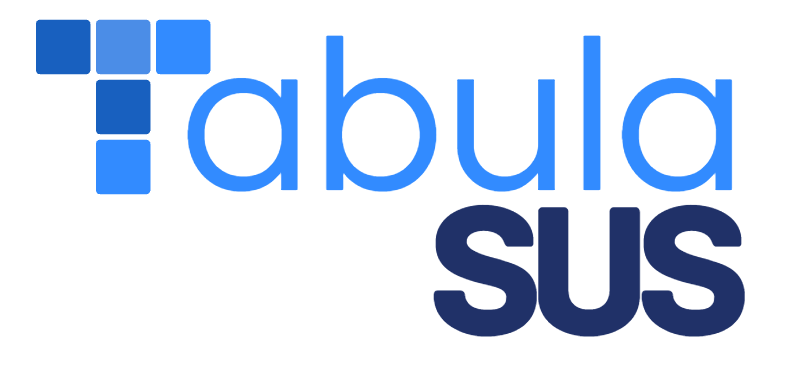

SIA/SUS · SIGTAP
Produção ambulatorial
Entenda a produção por estabelecimento, com quantidades e valores apresentados e aprovados.
Produção por estabelecimento

Saúde em dadosBaixar TabulaSUSDADOS PÚBLICOS. GESTÃO INFORMADA.
Conecte dados do DATASUS, informações do CNES e a tabela SIGTAP em análises para apoiar a gestão, a regulação e o planejamento em saúde.
Gratuito · Windows 64 bits · Instalação em um arquivo
27 UFsCobertura nacional
5 temasRelatórios para diferentes análises
GratuitoPara usar no seu computador
O QUE VOCÊ PODE CONSULTAR
Conheça os grupos de relatórios disponíveis no TabulaSUS e encontre o recorte que faz sentido para sua análise.
Comece pelo aplicativoSIA/SUS · SIGTAP
Entenda a produção por estabelecimento, com quantidades e valores apresentados e aprovados.
Produção por estabelecimento
SIH/SUS · CNES · SIGTAP
Consulte a produção dos hospitais, a ocupação de leitos e os fluxos de internação.
Produção hospitalar · AIHs rejeitadas · Produção profissional por AIH · Ocupação de leitos · Origem e destino
SINAN · SIVEP-Gripe
Acompanhe notificações de arboviroses e casos de síndrome respiratória aguda grave.
Dengue · Chikungunya · Zika · SRAG por semana epidemiológica
SINASC · SIM · CNES
Consulte nascidos vivos, pré-natal, partos e perfil materno-infantil.
Nascimentos e perfil materno-infantil · Mortalidade infantil
SIM · CID-10
Explore os óbitos registrados por semana, causa básica e município de residência.
Óbitos por semana
As competências e os filtros disponíveis dependem da publicação e dos campos de cada base pública.
CONEXÕES COM FONTES OFICIAIS
Além das bases do DATASUS, o TabulaSUS utiliza a tabela SIGTAP, APIs do CNES e outras fontes governamentais para complementar as análises disponíveis.
CADASTRO NACIONAL DE ESTABELECIMENTOS DE SAÚDE
Integrações com APIs e serviços do CNES complementam os relatórios com informações de estabelecimentos, profissionais e leitos, relacionando a produção à estrutura da rede de saúde.
TABELA UNIFICADA DO SUS
Consulte procedimentos, atributos e relacionamentos da tabela SIGTAP por competência. As referências oficiais ajudam a interpretar os procedimentos registrados.
API DE LOCALIDADES DO IBGE
A conexão com a API do IBGE fornece as referências de estados e municípios utilizadas na seleção e na organização territorial das consultas.
DADOS ABERTOS DO MINISTÉRIO DA SAÚDE
As análises também utilizam bases públicas de vigilância, mortalidade e nascimentos, conforme as fontes e os relatórios implementados.
Cada análise utiliza as conexões pertinentes ao seu escopo. A disponibilidade e a atualização das informações dependem dos serviços e das bases oficiais.
DO SEU ESTADO. PARA SUA ANÁLISE.
O TabulaSUS busca bases públicas do DATASUS por estado e competência e atende às 27 unidades da Federação.
Uma ferramenta de apoio para transformar consultas em informação útil ao trabalho de gestores, equipes de regulação e planejamento em saúde.
A disponibilidade dos dados acompanha cada fonte oficial.
PRONTO PARA COMEÇAR
Você não precisa instalar XAMPP, PHP ou Python separadamente. Os componentes necessários já acompanham o instalador.
Use o botão abaixo para baixar o arquivo SPPtab-Setup.exe, para Windows 64 bits.
Execute o instalador e siga as orientações. Ele prepara os componentes do TabulaSUS.
No iniciador, clique em Abrir TabulaSUS. Escolha sua UF e o relatório que deseja consultar.
É necessário acesso à internet para buscar bases, consultar APIs governamentais e obter referências oficiais, incluindo DATASUS, CNES, SIGTAP e IBGE. A disponibilidade de cada consulta depende da fonte pública.
Não. O TabulaSUS facilita a consulta e a organização de informações públicas. As fontes oficiais continuam sendo a referência dos dados, que podem receber atualizações.
O código está no repositório oficial. Os instaladores e as notas de atualização estão na página de versões no GitHub.